cuda/main.cu 2.25% пикселей отличается
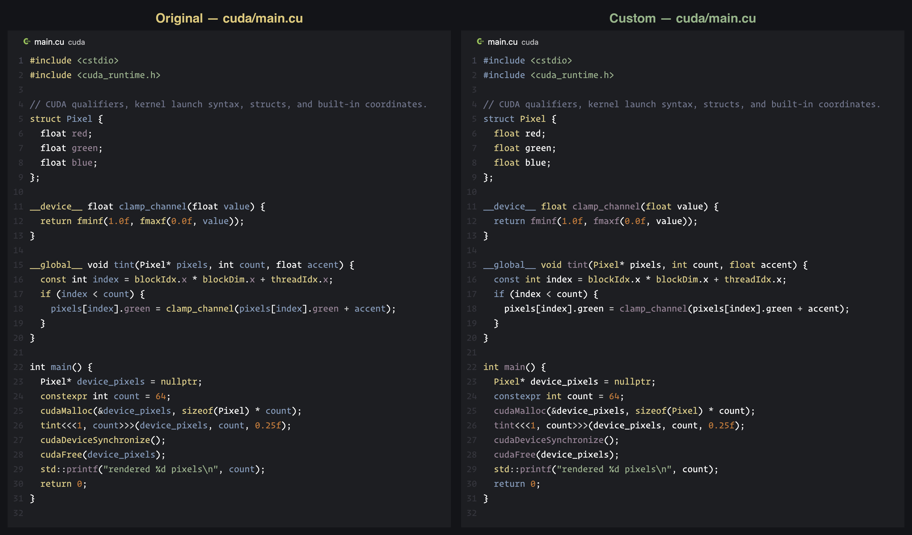
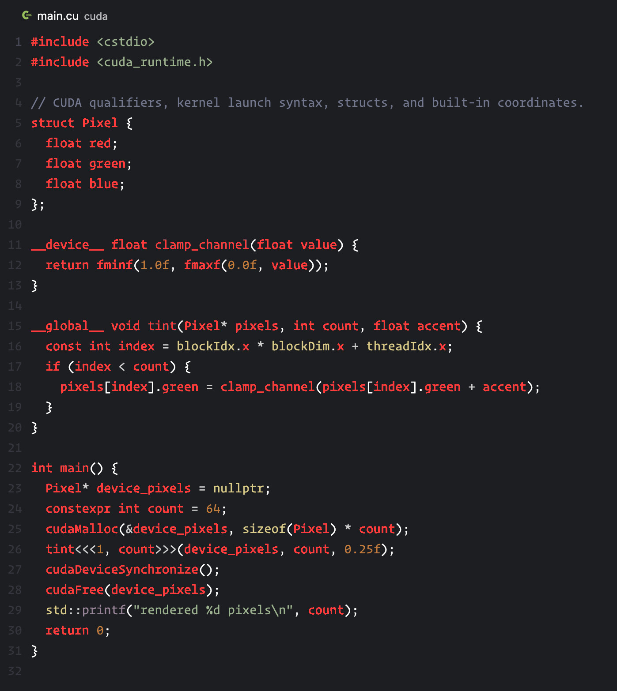
kotlin/Main.kt 2.05% пикселей отличается
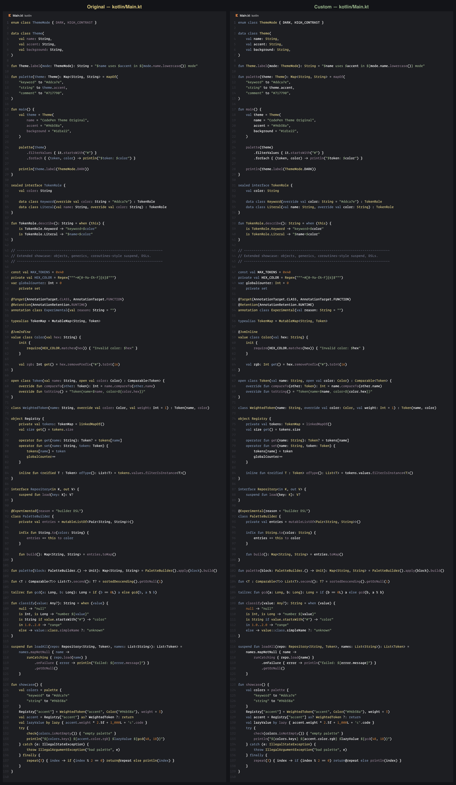
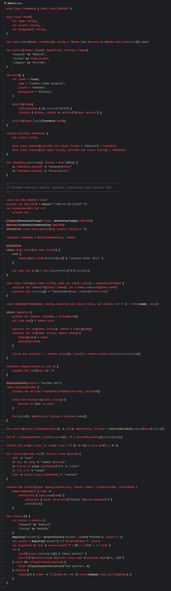
swift/main.swift 2.03% пикселей отличается
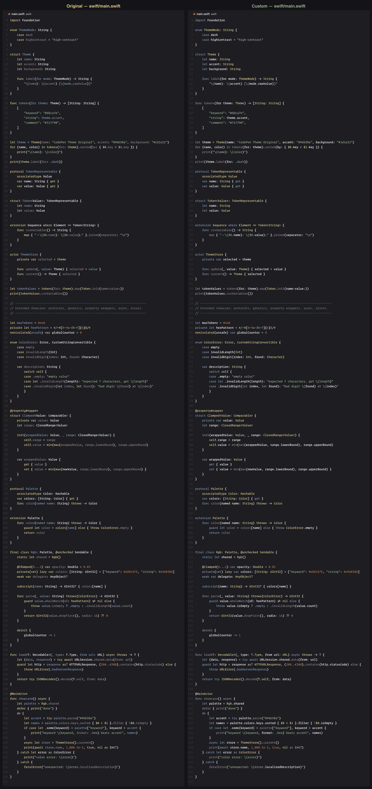
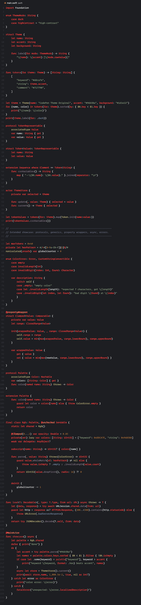
dart/main.dart 2.02% пикселей отличается
java/Main.java 2.00% пикселей отличается
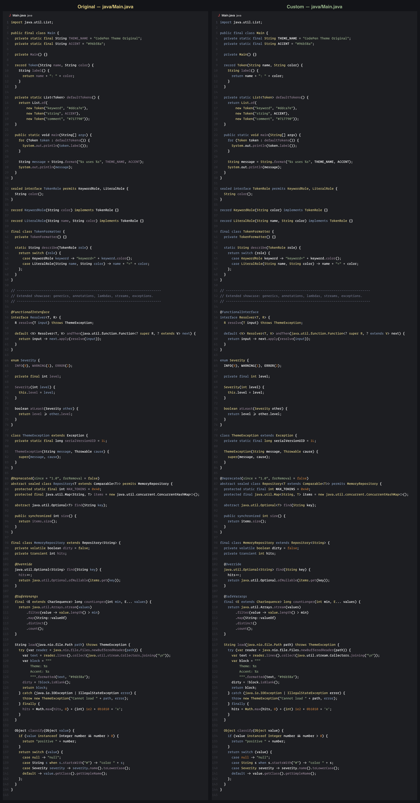
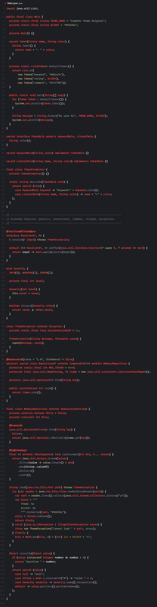
c/main.c 1.99% пикселей отличается
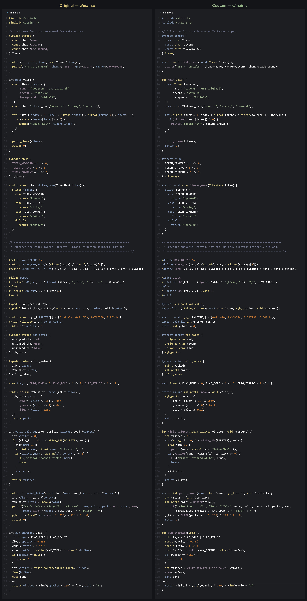
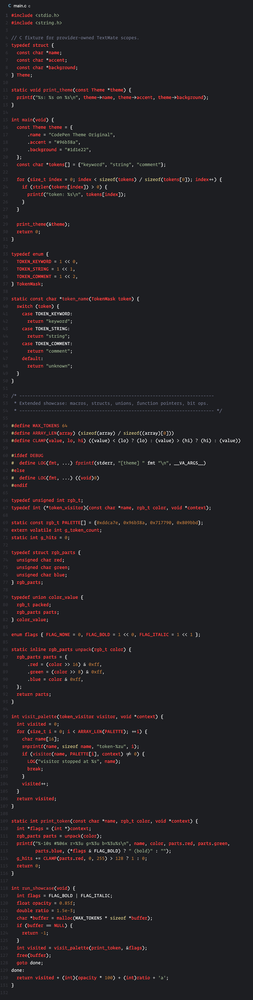
cpp/main.cpp 1.93% пикселей отличается
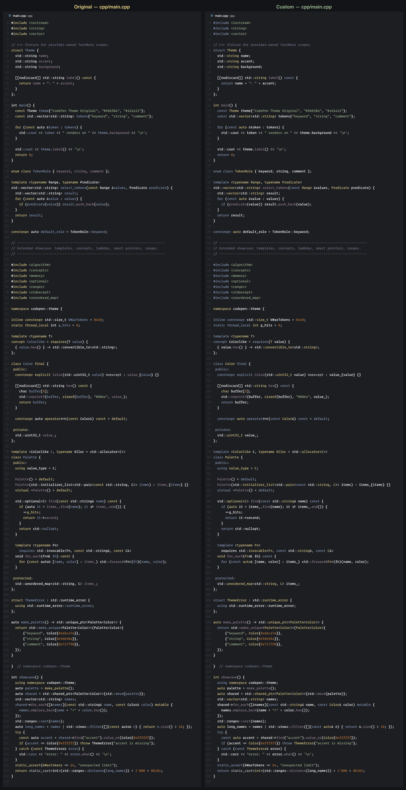
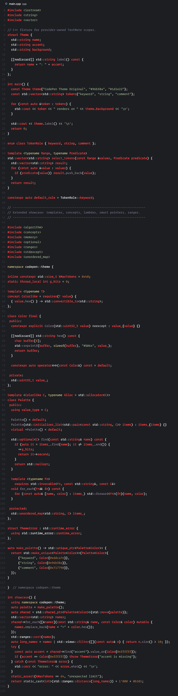
objective-c/main.m 1.92% пикселей отличается
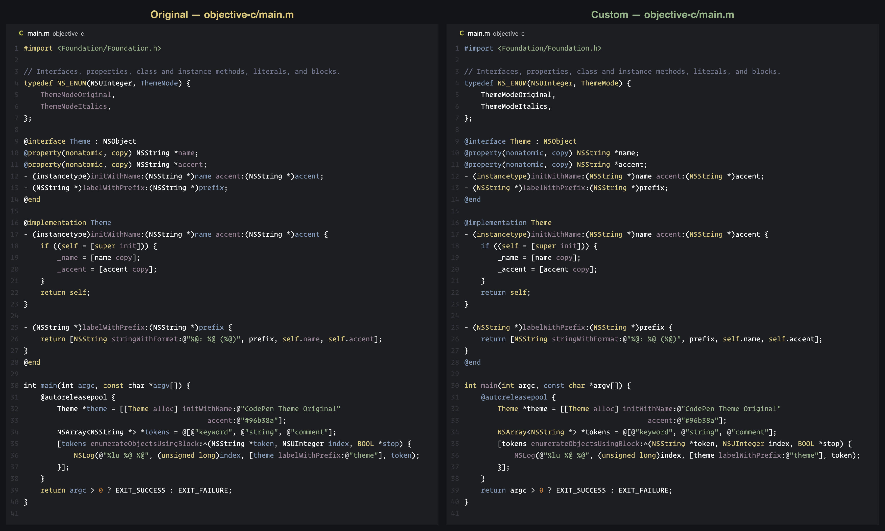
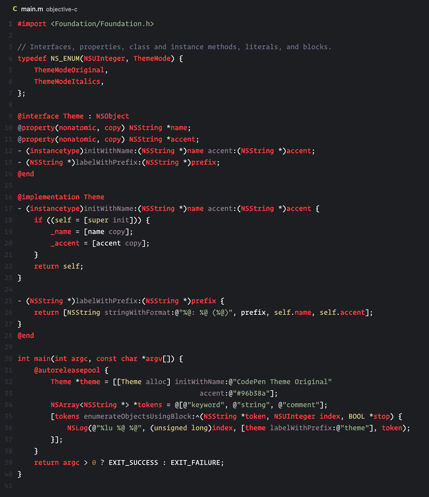
python/main.py 1.74% пикселей отличается
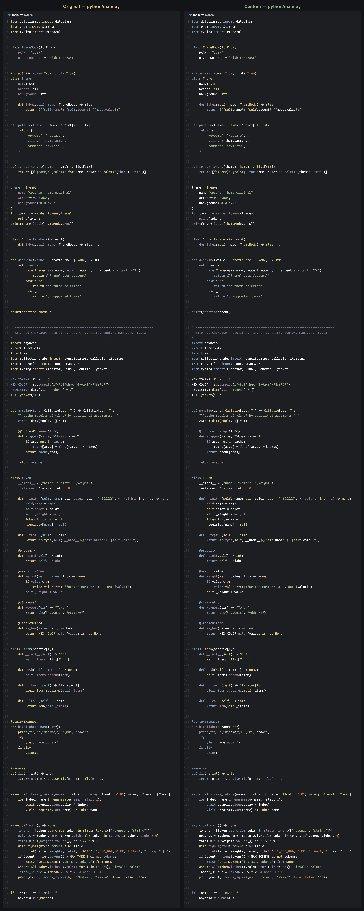
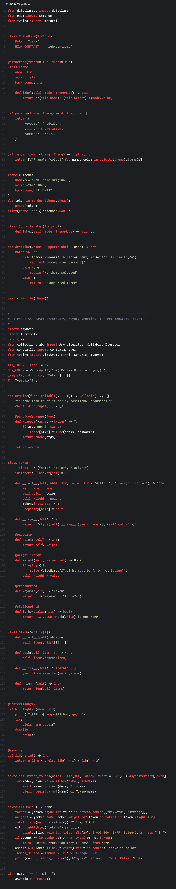
go/main.go 1.69% пикселей отличается
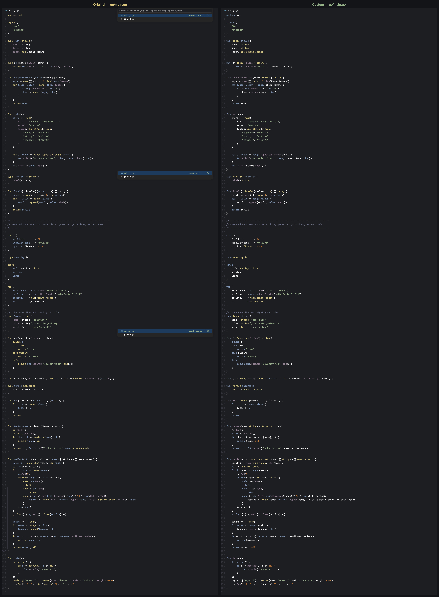
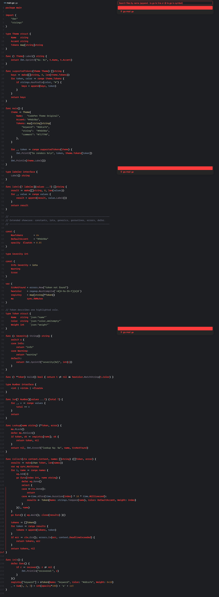
javascript/main.js 1.61% пикселей отличается
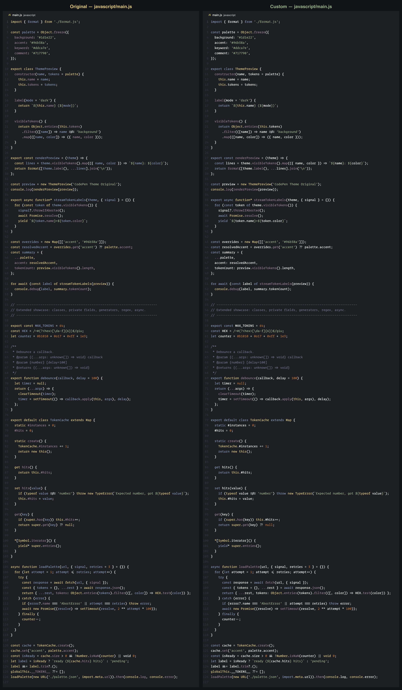
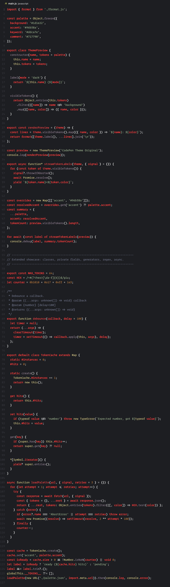
objective-cpp/main.mm 1.43% пикселей отличается
groovy/theme.groovy 1.37% пикселей отличается
typescript/main.ts 1.28% пикселей отличается

javascript/Component.jsx 1.27% пикселей отличается
handlebars/card.hbs 1.19% пикселей отличается
rust/main.rs 1.17% пикселей отличается
php/index.php 1.17% пикселей отличается

javascript/index.tsx 1.16% пикселей отличается
ruby/main.rb 0.85% пикселей отличается
pug/index.pug 0.79% пикселей отличается
dotenv/.env.example 0.74% пикселей отличается
svelte/Counter.svelte 0.67% пикселей отличается
toml/config.toml 0.45% пикселей отличается
ini/theme.ini 0.41% пикселей отличается
vue/Counter.vue 0.35% пикселей отличается
markdown/compatibility.md 0.33% пикселей отличается
shell/theme-preview.sh 0.31% пикселей отличается
json/theme.json 0.25% пикселей отличается
html/index.html 0.24% пикселей отличается
json/events.jsonl 0.23% пикселей отличается
json/theme.jsonc 0.20% пикселей отличается
properties/theme.properties 0.16% пикселей отличается
latex/references.bib 0.16% пикселей отличается
sass/styles.sass 0.13% пикселей отличается
scss/styles.scss 0.12% пикселей отличается
just/justfile 0.11% пикселей отличается
c4/workspace.dsl 0.05% пикселей отличается
docker/compose.yaml 0.04% пикселей отличается
make/Makefile 0.03% пикселей отличается
yaml/provider-compatibility.yaml 0.03% пикселей отличается
batch/theme-preview.bat 0.01% пикселей отличается
css/styles.css 0.01% пикселей отличается

latex/package.sty 0.00% пикселей отличается
diff/theme.patch 0.00% пикселей отличается
docker/Dockerfile 0.00% пикселей отличается
latex/document.tex 0.00% пикселей отличается
less/styles.less 0.00% пикселей отличается
restructuredtext/theme.rst 0.00% пикселей отличается
wat/theme.wat 0.00% пикселей отличается
xml/theme.xml 0.00% пикселей отличается